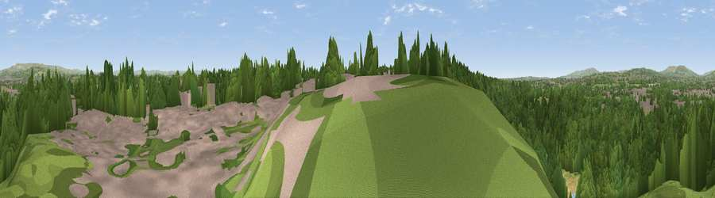

Viewpoint near Whitefield
#28922 in England · top 65% of its area beats it · near WhitefieldThe view, rendered

A 360° render of this exact spot computed from the terrain model, tree cover and land cover — summer colours, afternoon light, calibrated against photographs of famous viewpoints. Real trees, hedges and buildings will differ in detail.
The panorama
Grey silhouette: terrain skyline in each direction (720 bearings, Earth curvature and refraction included). Dashed green: skyline with trees (+15 m) and buildings (+8 m) as obstacles. Blue strip: how far the ground is visible on each bearing.
Where the view opens
Wedge length = distance to the farthest visible ground on that bearing (vegetation-aware). Rings at 10, 25 and 50 km.
What fills the view
62% woodland · 20% built-up · 16% grassland · 1% cropland ·
Angular shares of the visible panorama (visual magnitude), not map area. Landscape diversity 0.44 (0–1 Shannon).
Key numbers
More beautiful places nearby
The staircase of upgrades: each row has a higher view potential than everything closer. Driving times are estimates from straight-line distance, calibrated against real road routing — check an actual route before setting out.
| Place | Direction | Drive | Score |
|---|---|---|---|
| Clarke's Hill | SW · 2 km | ~6 min | 58.1 |
| Viewpoint near Heap Bridge | NE · 3 km | ~7 min | 68.9 |
| Viewpoint near Limefield | NNE · 7 km | ~14 min | 71.0 |
| Viewpoint near Hazelhurst | NNW · 10 km | ~19 min | 75.1 |
| Viewpoint near Edenfield | N · 12 km | ~22 min | 77.5 |
| White Brow | WNW · 15 km | ~27 min | 82.9 |
| Warton Crag | NNW · 73 km | ~96 min | 83.2 |
| Viewpoint near Grange-over-Sands | NNW · 82 km | ~106 min | 83.4 |
53.55948, -2.29698 · source: screening · position refined by local search. Computed location — check access rights before visiting.